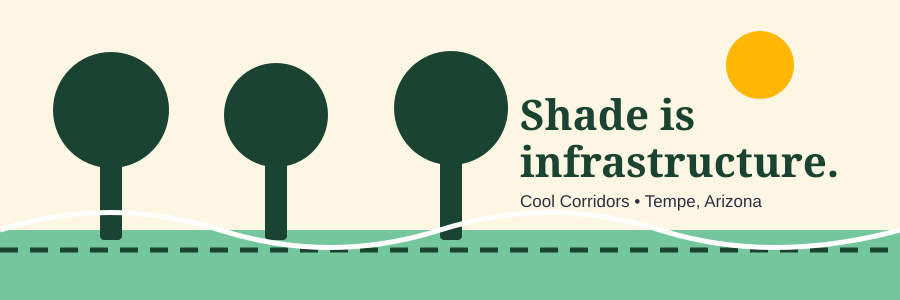

Shade is infrastructure.
Cool Corridors is a volunteer group in Tempe. Every summer we walk the routes people actually use between bus stops and cooling centers, and we record where the shade is and where it isn't.

Our maps go to the city's shade planners, to the cooling centers, and to anyone who has to make that walk at three in the afternoon in July.
Our Routes
Walk Schedule
Walks start at the bus stop listed. Bring water. We stop at every shade gap to measure it.
| Route | Day | Time | Meeting Point | Leader |
|---|---|---|---|---|
| Library Loop | Monday | 7:00 am | Tempe Transportation Center, bay 3 | Mark |
| Apache Line | Tuesday | 7:00 am | Apache and Rural streetcar stop | Dev |
| Mill Avenue Walk | Thursday | 6:30 pm | Tempe Beach Park entrance | Priya |
| McClintock Crossing | Saturday | 6:30 am | McClintock and Southern, northbound stop | Tomas |